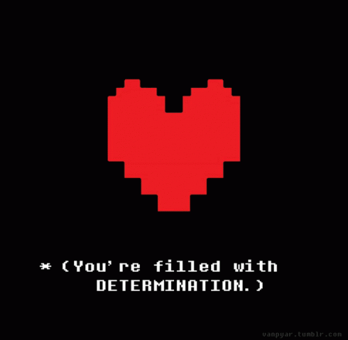
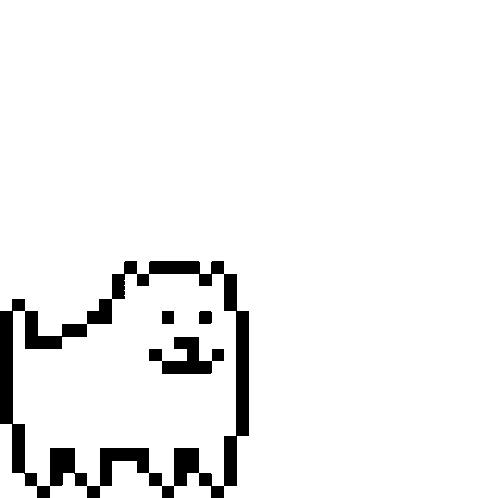

es un videojuego de rol en 2D de 2015 creado por el desarrollador independiente estadounidense Toby Fox. El jugador controla a un niño que ha caído al subsuelo: una gran región aislada bajo la superficie de la Tierra, separada por una barrera mágica. El jugador se encuentra con varios monstruos durante su viaje de regreso a la superficie, aunque algunos monstruos pueden involucrar al jugador en una pelea. El sistema de combate involucra al jugador navegando a través de los ataques mini bullet hell por parte del oponente. Se puede optar por pacificar y salvar a los monstruos o someterlos para matarlos. Estas elecciones afectan el juego, el diálogo, los personajes y la historia cambiando según las elecciones tomadas previamente.
Esta página fue creada con la intención de recopilar la mayor cantidad posible de información sobre Undertale.
Aqui encontrarán datos sobre el juego en general, sus personajes, su autor y por ultimo la musica desarrollada para el título.
